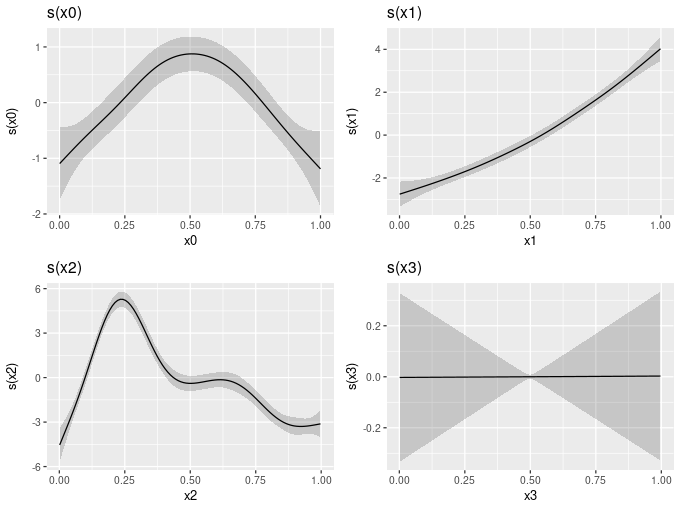
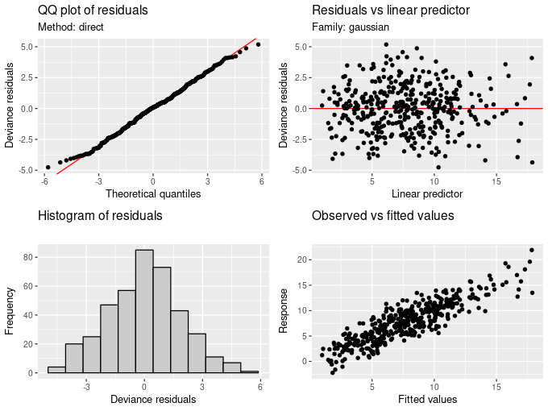
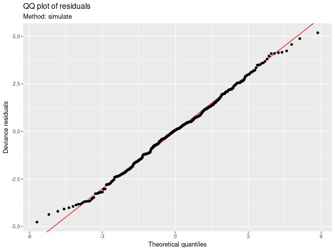
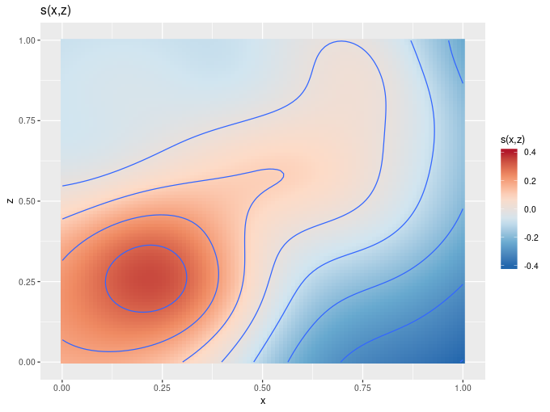
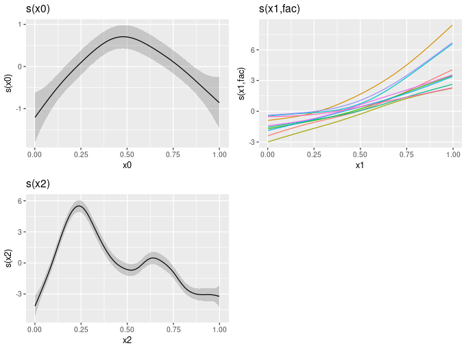

Introducing gratia
I use generalized additive models (GAMs) in my research work. I use them a lot! Simon Wood’s mgcv package is an excellent set of software for specifying, fitting, and visualizing GAMs for very large data sets. Despite recently dabbling with brms, mgcv is still my go-to GAM package. The only down-side to mgcv is that it is not very tidy-aware and the ggplot-verse may as well not exist as far as it is concerned. This in itself is no bad thing, though as someone who uses mgcv a lot but also prefers to do my plotting with ggplot2, this lack of awareness was starting to hurt. So, I started working on something to help bridge the gap between these two separate worlds that I inhabit. The fruit of that labour is gratia, and development has progressed to the stage where I am ready to talk a bit more about it.
gratia is an R package for working with GAMs fitted with gam(), bam() or gamm() from mgcv or gamm4() from the gamm4 package, although functionality for handling the latter is not yet implement. gratia provides functions to replace the base-graphics-based plot.gam() and gam.check() that mgcv provides with ggplot2-based versions. Recent changes have also resulted in gratia being much more tidyverse aware and it now (mostly) returns outputs as tibbles.
In this post I wanted to give a flavour of what is currently possible with gratia and outline what still needs to be implemented.
gratia currently lives on GitHub, so we need to install it from there using devtools::install_github:
devtools::install_github('gavinsimpson/gratia')To do anything useful with gratia we need a GAM and for that we need mgcv
library('mgcv')
library('gratia')and an old favourite example data set
set.seed(20)
dat <- gamSim(1, n = 400, dist = "normal", scale = 2, verbose = FALSE)The simulated data in dat are well-studied in GAM-related research and contain a number of covariates — labelled x0 through x3 — which have, to varying degrees, non-linear relationships with the response. We want to try to recover these relationships by approximating the true relationships between covariate and response using splines. To fit a purely additive model, we use
mod <- gam(y ~ s(x0) + s(x1) + s(x2) + s(x3), data = dat, method = "REML")mgcv provides a summary() method that is used to extract information about the fitted GAM
summary(mod)
Family: gaussian
Link function: identity
Formula:
y ~ s(x0) + s(x1) + s(x2) + s(x3)
Parametric coefficients:
Estimate Std. Error t value Pr(>|t|)
(Intercept) 7.7625 0.0959 80.95 <2e-16 ***
---
Signif. codes: 0 '***' 0.001 '**' 0.01 '*' 0.05 '.' 0.1 ' ' 1
Approximate significance of smooth terms:
edf Ref.df F p-value
s(x0) 3.528 4.370 11.30 4.2e-09 ***
s(x1) 2.662 3.310 129.02 < 2e-16 ***
s(x2) 8.146 8.799 84.72 < 2e-16 ***
s(x3) 1.001 1.002 0.00 0.987
---
Signif. codes: 0 '***' 0.001 '**' 0.01 '*' 0.05 '.' 0.1 ' ' 1
R-sq.(adj) = 0.763 Deviance explained = 77.2%
-REML = 850.87 Scale est. = 3.6785 n = 400
and the k.check() function for checking whether sufficient numbers of basis functions were used in each smooth in the model. (You may not have used k.check() directly — it is called by gam.check() which prints out other diagnostics and also produces four model diagnostic plots, which is one thing that gratia provides a replacement for.)
Plotting smooths
To visualize estimated GAMs, mgcv provides the plot.gam() method and the vis.gam() function. gratia currently provides a ggplot2-based replacement for plot.gam(). Work is on-going to provide vis.gam()-like functionality within gratia — see ?gratia::data_slice for early work in that direction. In gratia, we use the draw() generic to produce ggplot2-like plots from objects. To visualize the four estimated smooth functions in the GAM mod, we would use
draw(mod)
draw(mod) is a plot of each of the four smooth functions in the mod GAM.Internally draw() uses the plot_grid() function from cowplot to draw multiple panels on the plot device, and to line up the individual plots.
There’s not an awful lot more you can do with this now, but the at least the plot is reasonably pretty. gratia includes tools for working with the underlying smooths represented in mod, and if you wanted to extract most of the data used to build the plot you’d use the evaluate_smooth() function.
evaluate_smooth(mod, "x1")
# A tibble: 100 x 5
smooth fs_variable x1 est se
<chr> <fct> <dbl> <dbl> <dbl>
1 s(x1) <NA> 0.000565 -2.75 0.294
2 s(x1) <NA> 0.0106 -2.72 0.277
3 s(x1) <NA> 0.0207 -2.68 0.261
4 s(x1) <NA> 0.0308 -2.64 0.245
5 s(x1) <NA> 0.0409 -2.60 0.230
6 s(x1) <NA> 0.0510 -2.56 0.217
7 s(x1) <NA> 0.0610 -2.52 0.204
8 s(x1) <NA> 0.0711 -2.48 0.193
9 s(x1) <NA> 0.0812 -2.44 0.183
10 s(x1) <NA> 0.0913 -2.40 0.173
# ... with 90 more rows
Producing diagnostic plots
The diagnostic plots currently produced by gam.check() can also be produced using gratia, with the appraise() function
appraise(mod)
appraise(mod) is an array of four diagnostics plots, including a Q-Q plot (top left) and histogram (bottom left) of model residuals, a plot of residuals vs the linear predictor (top right), and a plot of observed vs fitted values.Each of the four plots is produced via user-accessible function that implements a specific plot. For example, qq_plot(mod) produces the Q-Q plot in the upper left for the figure above, and the qq_plot.gam() method reproduces most of the functionality of mgcv::qq.gam(), including the direct randomization procedure (method = 'direct', as shown above) and the data simulation procedure (method = 'simulate') to generate reference quantiles, which typically have better performance for GLM-like models (Augustin et al., 2012).
qq_plot(mod, method = 'simulate')
qq_plot(mod, method = 'simulate', fig.width = 6, fig.height = 4) is a Q-Q plot of residuals, where the reference quantiles are derived by simulating data from the fitted model.draw() can also handle many of the more specialized smoothers currently available in mgcv. For example, 2D smoothers are represented as geom_raster() surfaces with contours
set.seed(1)
dat <- gamSim(2, n = 4000, dist = "normal", scale = 1, verbose = FALSE)
mod <- gam(y ~ s(x, z, k = 30), data = dat$data, method = "REML")
draw(mod)
draw().and factor-smooth-interaction terms, which are the equivalent of random slopes and intercepts for splines, are drawn on a single panel and colour is used to distinguish the different random smooths
## simulate example... from ?mgcv::factor.smooth.interaction
set.seed(0)
## simulate data...
f0 <- function(x) 2 * sin(pi * x)
f1 <- function(x, a=2, b=-1) exp(a * x)+b
f2 <- function(x) 0.2 * x^11 * (10 * (1 - x))^6 + 10 * (10 * x)^3 * (1 - x)^10
n <- 500
nf <- 10
fac <- sample(1:nf, n, replace=TRUE)
x0 <- runif(n)
x1 <- runif(n)
x2 <- runif(n)
a <- rnorm(nf) * .2 + 2;
b <- rnorm(nf) * .5
f <- f0(x0) + f1(x1, a[fac], b[fac]) + f2(x2)
fac <- factor(fac)
y <- f + rnorm(n) * 2
df <- data.frame(y = y, x0 = x0, x1 = x1, x2 = x2, fac = fac)
mod <- gam(y~s(x0) + s(x1, fac, bs="fs", k=5) + s(x2, k=20),
method = "ML")
draw(mod)
draw(mod) for a more complex GAM containing a factor-smooth-interaction term with bs = 'fs'.What else can gratia do?
Although still quite early in the planned development cycle, gratia can handle most of the smooths that mgcv can estimate, including by variable smooths with factor and continuous by variables, random effect smooths (bs = 're'), 2D tensor product smooths, and models with parametric terms.
Smoothers that gratia can’t do anything with as yet are Markov random fields (MRFs; bs = 'mrf'), splines on the sphere (SoSs; bs = 'sos'), soap film smoothers (bs = 'so'), and linear functional models with matrix terms.
The package also includes functions for
- calculating across-the-function and simultaneous confidence intervals for smooths via
confint()methods, and - calculating first and second derivatives (of currently only univariate) smooths using finite differences.
fderiv()is the old home for first derivatives of GAM smooths, whilst the newderivatives()function can calculate first and second derivatives using forward (likefderiv()) as well as backward and central finite differences.
There is also are lot of exported functions that make it easier for working with GAMs fitted by mgcv and for extracting aspects of the fitted model and the smooths. The exact functionality is still being worked on so be prepared for some of the functions to come and go or change name as I work through ideas and implementations and settle on the interface for the tools that gratia will provide for this.
What can’t gratia do?
I’ve already covered where gratia is currently lacking in respect to the types of smoother that mgcv can fit. It is also currently lacking in tools for exploring models in more detail, such as the plots of model predictions over slices of covariate space that vis.gam() can produce (though see gratia::data_slice() for functions to create the data needed for such plots.) Nor can gratia currently handle smooths of higher than two dimensions. I’d like to add this capability soon as it will make visualizing GAMs fitted to spatio-temporal data much easier then it currently is.
The future?
Longer term I plan to fill out the types of smoothers that gratia can handle to cover all the types that mgcv can fit, and add vis.gam()-like functionality and the ability to handle higher dimensional smooths (plot.gam() can now handle 3- or 4-dimensional smooths.)
The ultimate goal of course is to just have draw() work for whatever GAM model you throw at it, and at least have feature parity with plot.gam() and vis.gam().
As is to be expected for such an early release, there is a lot of stabilization to function names and arguments that needs to happen in gratia, and a lot of documentation to be written, including some vignettes. For now, the best way to understand what gratia is doing or how it works is to look at the examples on the gratia website (built using pkgdown) and take a look at the package tests which contain lots of examples of GAM fits and the code to work with them.
I’m very much interested in user feedback, so please do let me know if you have any suggestions for additions or improvements to gratia, and if you do use gratia and find bugs in the package or GAMs that gratia can’t handle I would love to hear from you. You can get in touch via the comments below, or via GitHub Issues.
I would also be remiss if I did not mention Matteo Fasiolo’s excellent mcgViz package, which already has extensive capabilities for exploring GAM fits, including some very interesting approaches to handling models of millions of data points or more, which cause data visualization problems.